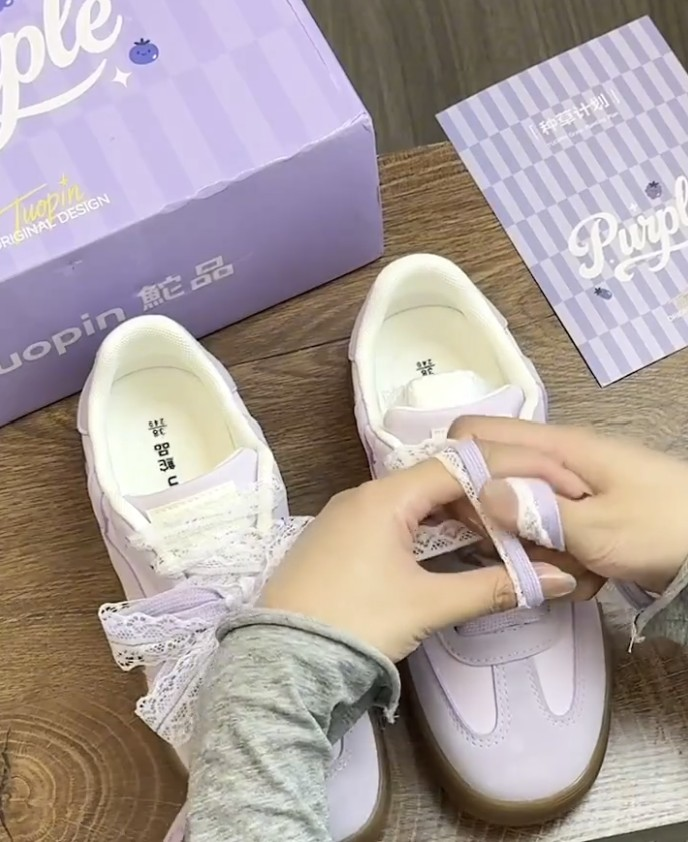

Honestly, the butterfly bow begins similarly to a traditional shoelace knot.
The main difference is how the loops are shaped and adjusted at the end!
Follow my steps carefully until your butterfly wings begin to take shape.

Keep the center knot tight while adjusting the wings! It makes a big difference in forming strong wings. Butterflies fly, not wobble!
If one wing becomes too large, gently pull the opposite loose lace.
Practice makes perfect, don't worry!